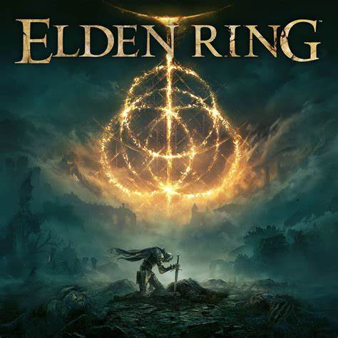

Elden Ring
"Elden Ring" is an action role-playing game developed by FromSoftware and published by Bandai Namco Entertainment. Released in 2022, it features a vast open-world environment known as the Lands Between, filled with challenging enemies, intricate lore, and stunning landscapes.
GTA San Andreas
"Grand Theft Auto: San Andreas" is an open-world action-adventure game by Rockstar Games. Released in 2004, it follows Carl "CJ" Johnson as he returns to Los Santos after his mother's murder. Set in a fictional version of California and Nevada, the game offers a vast environment, diverse missions, and numerous side activities.
Resident Evil 4

"Resident Evil 4" is a survival horror game developed by Capcom, originally released in 2005. The game follows protagonist Leon S. Kennedy as he embarks on a mission to rescue the U.S. president's daughter from a sinister cult in a remote European village.
Assassin Creed Series
The Assassin's Creed series is a popular action-adventure video game franchise developed by Ubisoft. Set across various historical periods, players assume the role of Assassins fighting against the Templar Order. The games are known for their open-world exploration, parkour-style movement, and a mix of historical and fictional narratives.